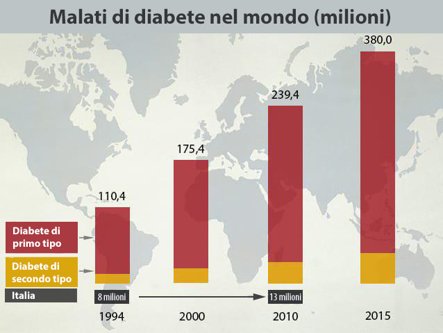

Sapete bene che al giorno d’oggi le statistiche dimostrano che i malati di diabete crescono sempre di più ogni anno in tutto il mondo. Soprattutto tra i giovani
La situazione attuale per quanto riguarda il diabete sta assumendo i caratteri di una malattia dalla spiccata mortalità. Negli ultimi 20 anni il numero di pazienti in tutto il mondo è cresciuto vertiginosamente e ora il problema è diventato globale per l’industria medica
Il diabete è causato da un’anomalia nelle cellule dell’organismo che trasformano lo zucchero presente nel sangue in energia. L’organismo non riesce a produrre l’insulina necessaria. Si tratta dell’ormone prodotto dalla cistifellea per lavorare lo zucchero presente nel sangue
La causa principale del diabete è la mancanza di equilibrio tra carboidrati e acqua nell’organismo, il che è causato da un’anomalia nel funzionamento della cistifellea. Quest’organo rilascia l’ormone che si chiama insulina. L’insulina mantiene il livello di zucchero nel sangue nella norma. Senza insulina l’organismo non riesce a trasformare lo zucchero in glucosio, per questo lo zucchero si accumula nel cuore in grandi quantità e crea problemi
Sintomi del diabete
- Sete
- Stanchezza cronica
- Urinazione frequente
- Secchezza delle fauci
- Debolezza e stanchezza
- Allergie della pelle
- Mal di testa
- Senso di fame
- Prurito al corpo
- Sonnolenza
- Cicatrizzazione lenta
- Peso in eccesso
Altri sintomi
- Peso in eccesso
- Le cellule non necessitano insulina
- Urinazione frequente
- Debolezza nel corpo
- Apatia
- Pressione alta
- Dipendenza da alcol e sigarette
- Età superiore ai 40 anni
- Stress
Il pericolo della malattia consiste nel fatto che il paziente potrebbe non avere sintomi. Bisogna sempre controllare il livello di zucchero nel sangue nelle analisi
Il diabete di secondo tipo si differenzia nettamente da quello di primo tipo. E’ potenzialmente pericoloso per la vita
I pazienti possono non rendersi conto di avere un livello di zucchero troppo alto nel sangue. Le complicazioni possono rendere la malattia più grave, come possiamo vedere qui sotto:
- Vista annebbiata
- Sintomi neurologici(Sensazioni poco piacevoli a varie parti del corpo, pelle che si secca velocemente)
- Malfunzionamento del fegato
- Infiammazioni e problemi ai piedi
- Infezioni di diverso tipo, ad esempio funghi
Come si cura il diabete quindi?
I medici ed ricercatori hanno cercato una risposta a questa domanda per molti anni. Dopo 3 anni di studi si è arrivati a capire che il 97% di chi ha notato un deciso abbassamento del livello del sangue ha assunto , utilizzato nell’esperimento
Gli esperti medici hanno fornito più informazioni sul prodotto
L’esperimento ha dimostrato che le cellule di insulina rimangono in circolo anche dopo la fine del ciclo di cura , il che dimostra l’incredibile efficacia di
E’ dimostrato che il preparato controlla il livello di zucchero nel sangue e non ha effetti collaterali. I pazienti con il diabete di tipo 2 non hanno più bisogno delle iniezioni di insulina . Attualmente 50 000 persone stanno effettuando un ciclo di cura con , ed hanno un livello di zucchero nel sangue alto, superiore a 10
Il 95% ora ha un livello di zucchero nel sangue non troppo alto 3,5-5,9. E in più la situazione di salute generale del 93% dei malati di diabete è migliorata nettamente
- Recupero delle funzioni della cistifellea
- Stabilizzazione della pressione
- Abbassamento del livello di colesterolo nel sangue
- Rigenerazione delle cellule dell’organismo
- Miglioramento dell’aspetto estetico della pelle
- Gli apparati dell’organismo funzionano meglio
- Migliora l’urinazione, diminuisce la sete
- Il corpo inizia nuovamente a bruciare grasso
- Diminuisce il rischio di complicazioni
, estratto vegetale, sostiene il livello di zucchero nel sangue ad un livello stabile. Come anche la produzione di insulina nell’organismo.
La formula unica di è certificata
- Mantiene il livello di zucchero nel sangue nella norma
- Obbliga l’organismo a produrre il giusto livello di insulina
- Il fegato funziona stabilmente
- Cala il livello di glucosio
Il 98% delle persone che utilizza questo prodotto si sente in salute entro 90 giorni Si ritiene che si tratti di una vera e propria rivoluzione medica nell’ambito della cura del diabete. Finalmente i pazienti possono tornare ad una vita normale